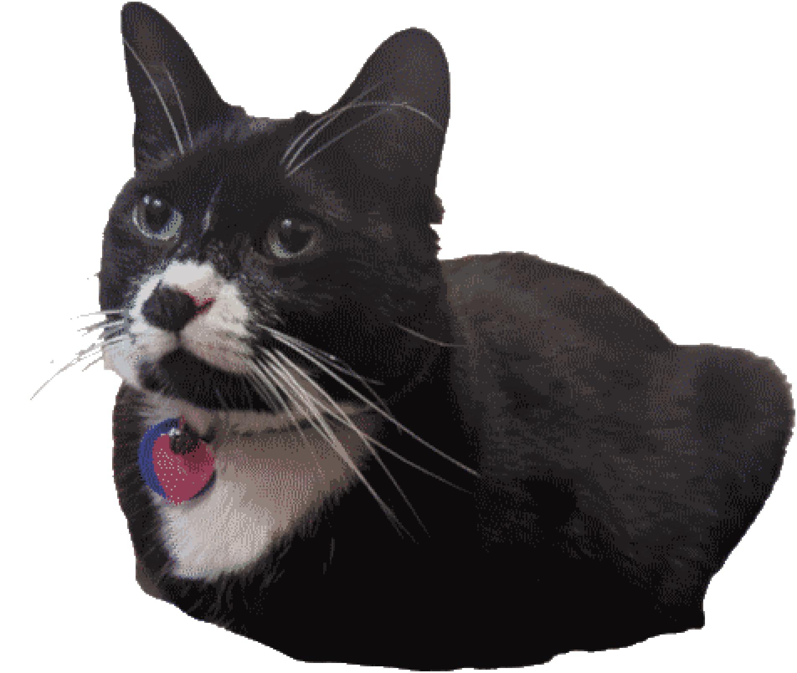

- programming
- photography
- graphic design
- playing sax/piano
- retro gaming
- vintage/modern tech
I'm currently a junior at WHS and also a huge nerd in a lot of things (primarily those which pertain to technology). I love computers, which I blame on my early exposure to computers and the internet (online since age 5!). Parents, here's my word of advice: take away the iPad and give your kids a damn PC (or a Mac, if you're cool like that).
Self-proclaimed hipster (which disqualifies me as being such), I tend to consume media that is considered outdated by most. There's just something about old software, hardware, games, consoles, music, or just anything and everything retro and/or outdated that I find interesting. Except history class. I do not enjoy history class.
The most notable part about me has to be all of the stuff I have created and all of the ideas for stuff I will create. I've always had a greater desire to make things rather than use things. While I get all kinds of weird looks for not finding fun video games like seemingly every other teenage male being, I really do enjoy the things I make, and I hope you will too!
(and now, a picture of my cat which i am obliged to include as it was in my original sketch for this page. enjoy.)
